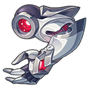
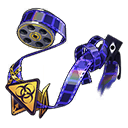

추천 광추
먼 길 끝의 귀로
격파 특수효과·격파 피해 취약
효과 자세히
격파 특수효과가 60% 증가. 적의 약점이 격파될 시 100%의 기본 확률로 대상을 타오름 상태에 빠트리고 받는 격파 피해를 18% 증가시킨다, 지속 2턴. 해당 효과는 2스택 중첩 가능하다
바람에 흩날리는 거짓말
빠른 첫 행동과 방어력 감소
효과 자세히
속도 +18%. 공격 시 기본 확률 120%로 방어력 −16%(2턴), 전투 속도 170 이상이면 별도 −8%(2턴).
땀방울처럼 빛나는 결심
팀 방어력 감소 보강
효과 자세히
장착한 캐릭터는 적 명중 시 만일 해당 목표가 함락 상태가 아닐 경우 100%의 기본 확률로 대상을 함락 상태에 빠트린다. 함락 상태의 적은 방어력이 16% 감소. 지속 1턴
고독의 치유
격파 특수효과와 처치 시 에너지
효과 자세히
격파 특수효과 +40%. 필살기 → 지속 피해 +48%(2턴). 자신의 지속 피해가 적용된 적이 처치되면 에너지 +6pt.
초보자 임무 시작 전
효과 명중과 방어력 감소 적 공격 시 에너지
효과 자세히
효과 명중이 40% 증가. 방어력이 감소된 적을 공격하면 에너지를 8pt 회복
추천 유물
곤충 재앙을 잠재우는 철기군 4 · 아공간 이상 사물 수용소 2
- 머리
 주옵션HP부옵션효과 명중 · 속도 · 격파 특수효과 · HP%
주옵션HP부옵션효과 명중 · 속도 · 격파 특수효과 · HP% - 손

주옵션공격력부옵션효과 명중 · 속도 · 격파 특수효과 · HP% - 몸통
 주옵션효과 명중부옵션속도 · 격파 특수효과 · HP%
주옵션효과 명중부옵션속도 · 격파 특수효과 · HP% - 다리
 주옵션속도부옵션효과 명중 · 격파 특수효과 · HP%
주옵션속도부옵션효과 명중 · 격파 특수효과 · HP% - 구체
 주옵션HP% / 방어력%부옵션효과 명중 · 속도 · 격파 특수효과 · HP% (주옵션 제외)
주옵션HP% / 방어력%부옵션효과 명중 · 속도 · 격파 특수효과 · HP% (주옵션 제외) - 매듭

주옵션격파 특수효과 / 에너지 회복효율부옵션효과 명중 · 속도 · 격파 특수효과 (주옵션 제외) · HP%
이 조합을 추천하는 이유
철기군 → 격파 특수효과 150%/250%에서 격파/슈퍼 격파 방어력 무시. 수용소 → 속도 145부터 아군 격파 특수효과 +18%.
유성을 쫓는 괴도 4 · 생명의 바커 공 2
- 머리
 주옵션HP부옵션효과 명중 · 속도 · 격파 특수효과 · HP%
주옵션HP부옵션효과 명중 · 속도 · 격파 특수효과 · HP% - 손
 주옵션공격력부옵션효과 명중 · 속도 · 격파 특수효과 · HP%
주옵션공격력부옵션효과 명중 · 속도 · 격파 특수효과 · HP% - 몸통
 주옵션효과 명중부옵션속도 · 격파 특수효과 · HP%
주옵션효과 명중부옵션속도 · 격파 특수효과 · HP% - 다리
 주옵션속도부옵션효과 명중 · 격파 특수효과 · HP%
주옵션속도부옵션효과 명중 · 격파 특수효과 · HP% - 구체
 주옵션HP% / 방어력%부옵션효과 명중 · 속도 · 격파 특수효과 · HP% (주옵션 제외)
주옵션HP% / 방어력%부옵션효과 명중 · 속도 · 격파 특수효과 · HP% (주옵션 제외) - 매듭
 주옵션에너지 회복효율부옵션효과 명중 · 속도 · 격파 특수효과 · HP%
주옵션에너지 회복효율부옵션효과 명중 · 속도 · 격파 특수효과 · HP%
이 조합을 추천하는 이유
괴도 → 격파 특수효과 +32%, 직접 격파 시 에너지 +3pt. 바커 공 → 속도 120에서 첫 행동 40% 당김.
이 정도면 잘 키웠다
동일 파티·광추 기준 · 조건 [*]
| 스탯 | 추천 스탯 | 준종결 | 종결 |
|---|---|---|---|
| 격파 특수효과 [*] 220%는 격파 행적의 높은 보너스 기준. 자체 행적 +30%, 동료·장신구 효과를 함께 계산하세요. | 전투 220% | 전투 250% 선택 | 220% 이상 유지 |
| 효과 명중 [*] 효과 저항 40%인 적에게 100% 기본 확률 방어력 감소 적중 기준. | 67% | 67% 유지 | 필요 조건 유지 |
| 속도 [*] 수용소 발동은 전투 속도 145. 첫 턴 기도 대상보다 먼저 행동하도록 맞추세요. | 142+ | 145+ | 160+ |
육성 단계의 기준
Lv.80 · 5성 유물 +15. Prydwen 참고 범위와 발동 조건을 바탕으로 나눈 편집 목표입니다.
성혼과 추천 돌파
성혼 1은 주 대상의 격파 효율을, 성혼 2는 반복 격파 전투에서 필살기와 아군 행동 횟수를 높입니다.
1기도 대상 약점 격파 효율 +50%추천
여우의 기도를 보유한 아군의 약점 격파 효율이 50% 증가
2격파 시 에너지 +3pt·필살기로 아군 행동 24% 당김추천
적의 약점이 격파될 시 망귀인이 에너지를 3pt 회복. 필살기 발동 후 모든 아군의 행동 게이지가 24% 증가
3전투 스킬 +2 · 일반 공격 +1
전투 스킬 +2 · 일반 공격 +1
4기도 대상 격파 피해 +20%
여우의 기도를 보유한 아군이 가하는 격파 피해가 20% 증가
5필살기 +2 · 특성 +2
필살기 +2 · 특성 +2
6염화 중 아군 전원에게 기도·자신 약점 격파 효율 +50%
망귀인의 약점 격파 효율이 50% 증가. 망귀인이 염화 상태일 시 여우의 기도 효과가 모든 아군에게 적용된다
추천 파티


기본 운영과 행적
기본 운영
부트힐·라파는 여우의 기도를 유지해 약점이 다른 적도 대응하세요. 자체 약점 무시가 있는 반디와 편성할 때 영사나 갤러거에게 기도를 주면 강인성 감소가 늘어납니다.
행적 우선순위
특성 > 전투 스킬 = 필살기 = 일반 공격. 격파 특수효과 조건과 여우의 기도 지원 행적을 모두 해금하세요.
아하 속도 계산기 →기준과 출처 · 2026-11-25
4.7 · 한국어 게임 데이터 및 Prydwen 육성 분석